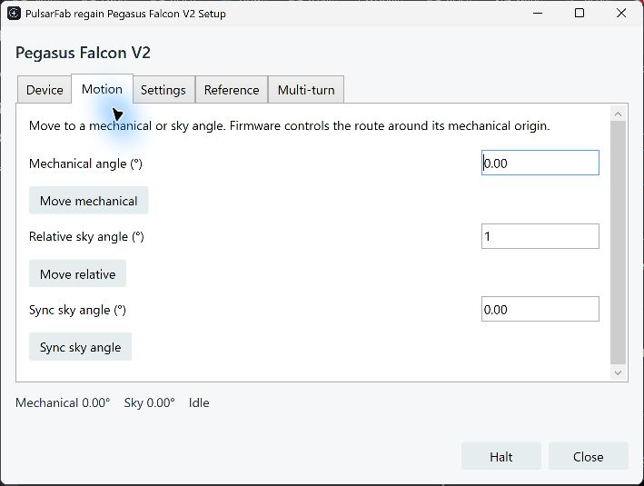

regain documentation
Pegasus Astro Falcon V2
SDK-free rotation through native NINA, shared Windows ASCOM, or Alpaca.
Experimental support covers Falcon V2, not V1. The same Rust driver powers all three connections; Pegasus Unity and its SDK are not required.
Connect the rotator
- Connect USB. Windows uses its built-in USB Serial Device driver.
- Disconnect Falcon in Unity. Its background server can retain the port after the window closes.
- In native NINA or the ASCOM Rotator chooser, select PulsarFab regain Pegasus Falcon V2. Open setup, refresh devices, select the USB serial and connect for setup.
- For Alpaca, open
/setup/rotators, add a Pegasus Falcon V2 slot and select its USB serial. Add separate slots for additional Falcons or CAAs. Each slot keeps a stable number and UUID.
Selection follows the USB serial rather than a fixed COM number. A busy or missing device fails connection; it never silently selects a simulator.


Rotate, sync and set an origin
- Normal moves use mechanical angles from 0° up to, but excluding, 360°. Firmware chooses the route around its mechanical origin.
- Sync changes the sky angle without moving. Reverse changes motor direction in firmware while preserving the current reported sky angle.
- Set reference and Reset origin relabel the current mechanical position without moving. They change where firmware applies its cable-wrap routing.
- Multi-turn explicitly accepts up to ±450°, in segments of at most 90° with reference resets. It bypasses normal wrap protection; check clearance and cable slack before starting.
Halt cancels pending multi-turn segments. An uncertain command requires reconnect rather than automatic replay. An unfinished reference operation makes the saved coordinates uncertain; reconnect discards that sky offset so you can sync again.
Standard ASCOM and Alpaca moves, halt, sync and reverse use their normal interface members. Reference and multi-turn operations are also available as regain actions. Speed and microsteps are readable; setters, derotation, Wi-Fi setup and firmware updates are not exposed.
Share with ASCOM clients
The native ASCOM driver supports 32-bit and 64-bit clients through Regain.Pegasus.ASCOM.exe, which also hosts FocusCube3. Each Falcon client holds its own connection lease. Disconnecting one leaves siblings connected; the last disconnect stops motion and releases the port.
Alpaca clients share the server’s worker. Native NINA, ASCOM, Alpaca and Unity still need exclusive ownership relative to one another. Choose NINA’s ASCOM connection when sharing with another ASCOM application. The 0.6 Hub preview provides a separate shared-host model.
Hardware validation and source
Windows tests used a physical Falcon V2, firmware 1.8 revision A: short moves, crossing zero, ±450° travel, halt, origin reset, reverse, reconnects, native NINA, Alpaca and shared 32/64-bit ASCOM. Linux/macOS physical validation is pending.
The implementation is regain-pegasus::falcon, using the common regain-device worker and serial framing. See the protocol, actions and test commands and hardware test record.